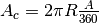
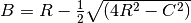

propcirc – Circle, Properties of¶
Analysis¶
This is a kind of Solver with a number of circle elements.
Here’s the canonical diagram based on the introductory text in HamCalc.
{kind=link}
The description covers the CAB sector of the circle, triangle, and the segment. This is the “inside triangle”.
The program’s description doesn’t cover the second triangle very clearly.
The second triangle is the small outside triangle labeled ABD. The point D is on the circumference midway between A and B. Line CD bisects CA and CB. The “height of segment” is this g.
Here’s an different variation on this picture that shows the trigonometric functions and how they apply to the triangle.
{kind=link}
[From the Wikimedia Commons, http://en.wikipedia.org/wiki/File:Circle-trig6.svg]
{kind=link}
In this, the triangle is OAB instead of CAB. The Angle, a, is . The line CD is the “height of segment”.
The segment labeled “chord” on this diagram is not the chord used by HamCalc; the HamCalc chord is the line AB, with a length .
HamCalc has a number of equations used to solve different portions of the circle.
We’ll analyze that algorithm below.
In order to keep the analysis sensible, we’ll stick with the legacy variable names are as follows:
| R: | Radius,  . . |
|---|---|
| D: | Diameter,  . . |
| CF: | Circumference, to make it distinct from  . . |
| AR: | Area, to make it distinct from . |
| A: | Angle,  ( ( might be better.) might be better.) |
| C: | Length of Chord (A-B line on diagram), (should be .) |
| AC: | Length of Arc (A-B on diagram), to make it distinct from (should be .) |
| B: | Height of segment (g on diagram),  . . |
The bottom line is this:
Important
Given R and A, all other values can be determined.
While HamCalc does quite a bit of work, it seems simpler, if R or A is omitted, to do the following:
Step 1. Compute the missing value(s) for R, A (or both) from the available values. Step 1A is to compute R. Step 1B is to compute A if possible.
Step 2. Compute the remaining values from R and A if it’s known. This may lead to contradictory results if the input is over-specified.
There are over 40,000 combinations of the eight variables. Of these, many are over-specified; they include too many values. A user could enter contradictory values. For example,
 is a potential combination that includes a contradiction.
is a potential combination that includes a contradiction.
The combination , however, has no contradiction, but omits providing a way to derive A.
We’ll look at this “simplified” version of what HamCalc does. Below, we’ll look the legacy HamCalc code in detail.
Step 1A – Compute R¶
Deriving R from any one of D, CF or AR is easy.
What’s left is deriving R from the remaining four variables, A, C, AC and B. There are six combinations.
A and C:

A and AC (line 750):
A and B (line 660):
C and AC.
Two points on the circumference are not sufficient to define a circle. There’s no way to compute the radius.
C and B (line 670):
AC and B:
We need to solve the following for R.

An approximation looks sensible. There are two in the legacy program for determining A. A similar approximation may be able to determine R.
There are a few constraints on the ranges of values: and and .
However, is the open issue. With R allowed to range to essentially infinity, this isn’t a simple bisection to locate the root.
Step 1B – Compute A¶
If we can, A can be computed. It’s not essential, however. If omitted, then it can be treated as zero for the purposes of computing the output values.
Deriving A from R and one of C, AC or B is a little more work.
There are three cases.
R and C (line 650):
R and AC (line 640):

R and B (lines 680 and 650):
Step 2 – Final Results¶
Then, step 2, is to develop all the values from R and A.
When A measured in degrees it’s .

Bonus value: area of sector.
Bonus value: area of segment.
Implementation¶
This is a variant on a Solver. It’s not purely a Solver since we have so many relationships among to many variables.
Instead, we derive R and A and then compute all the derived values from those two.
Note that the sample output includes 10 output values from 8 potential input variables.
hamcalc.math.propcirc – Circle, Properties of
Here are some test cases.
>>> import hamcalc.math.propcirc as propcirc
>>> propcirc.circle( R=12, angle=propcirc.radians(60) )
{'A': 452.3893421169302, 'C': 75.39822368615503, 'angle': 1.0471975511965976, 'D': 24, 'G': 1.6076951545867355, 'L_A': 12.566370614359172, 'A_G': 13.044394613675443, 'L_C': 11.999999999999998, 'R': 12, 'A_C': 75.39822368615502}
>>> propcirc.circle( D=24, angle=propcirc.radians(60) )
{'A': 452.3893421169302, 'C': 75.39822368615503, 'angle': 1.0471975511965976, 'D': 24.0, 'G': 1.6076951545867355, 'L_A': 12.566370614359172, 'A_G': 13.044394613675443, 'L_C': 11.999999999999998, 'R': 12.0, 'A_C': 75.39822368615502}
>>> propcirc.circle( C=75.4, angle=propcirc.radians(60) )
{'A': 452.41065813415986, 'C': 75.4, 'angle': 1.0471975511965976, 'D': 24.000565418257818, 'G': 1.6077330304281274, 'L_A': 12.566666666666666, 'A_G': 13.045009249155228, 'L_C': 12.000282709128907, 'R': 12.000282709128909, 'A_C': 75.40177635569331}
>>> propcirc.circle( A=452.4, angle=propcirc.radians(60) )
{'A': 452.4, 'C': 75.39911183784653, 'angle': 1.0471975511965976, 'D': 24.000282707463835, 'G': 1.6077140923958928, 'L_A': 12.566518639641089, 'A_G': 13.044701927795316, 'L_C': 12.000141353731916, 'R': 12.000141353731918, 'A_C': 75.39999999999999}
>>> propcirc.circle( L_C=12, angle=propcirc.radians(60) )
{'A': 452.3893421169304, 'C': 75.39822368615505, 'angle': 1.0471975511965976, 'D': 24.000000000000004, 'G': 1.6076951545867357, 'L_A': 12.566370614359174, 'A_G': 13.04439461367545, 'L_C': 12.0, 'R': 12.000000000000002, 'A_C': 75.39822368615505}
>>> propcirc.circle( L_A=12.56, angle=propcirc.radians(60) )
{'A': 451.93077414974937, 'C': 75.36000000000001, 'angle': 1.0471975511965976, 'D': 23.98783302281047, 'G': 1.60688012165867, 'L_A': 12.56, 'A_G': 13.031172061850732, 'L_C': 11.993916511405233, 'R': 11.993916511405235, 'A_C': 75.3217956916249}
>>> propcirc.circle( G=1.6, angle=propcirc.radians(60) )
{'A': 448.0690272864175, 'C': 75.03733375924637, 'angle': 1.0471975511965976, 'D': 23.885125168440826, 'G': 1.6, 'L_A': 12.506222293207728, 'A_G': 12.919820742768572, 'L_C': 11.942562584220411, 'R': 11.942562584220413, 'A_C': 74.67817121440291}
>>> propcirc.circle( R=12, L_C=12 )
{'A': 452.3893421169302, 'C': 75.39822368615503, 'angle': 1.0471975511965979, 'D': 24, 'G': 1.6076951545867368, 'L_A': 12.566370614359174, 'A_G': 13.044394613675465, 'L_C': 12.0, 'R': 12, 'A_C': 75.39822368615505}
>>> propcirc.circle( R=12, G=1.6 )
{'A': 452.3893421169302, 'C': 75.39822368615503, 'angle': 1.0446296436120974, 'D': 24, 'G': 1.600000000000001, 'L_A': 12.535555723345169, 'A_G': 12.952155424152622, 'L_C': 11.973303637676615, 'R': 12, 'A_C': 75.21333434007101}
>>> propcirc.circle( L_A=12.56, G=1.61 )
{'A': 450.09677997191295, 'C': 75.20693418466634, 'angle': 1.049328872579753, 'D': 23.939110660552977, 'G': 1.6099999693011857, 'L_A': 12.56, 'A_G': 13.054769563165337, 'L_C': 11.991641677007895, 'R': 11.969555330276489, 'A_C': 75.16880747413634}
- hamcalc.math.propcirc.bisection(L_A, G, eps=1e-07)[source]¶
Approximate a value for R from L_A and G via bisection.
We’re solving for a value of R.
We know only that
 .
.This requires a 2-phase search.
- Double R until it’s demonstrably too large.
- Bisect between the last two values of R.
Parameters: - L_A – Length of Arc
- G – Height of Arc
Returns: R radius
>>> import hamcalc.math.propcirc as propcirc >>> propcirc.bisection( L_A=12.56, G=1.61 ) 11.969555330276489
- hamcalc.math.propcirc.circle(**kw)[source]¶
Solve properties of a circle.
Note that only R and angle are really required to compute all of the values. If angle cannot be computed, it’s assumed to be irrelevant and angle-related values are not computed, either.
This solver derives values for R or angle (or both, if possible) and then recomputes the remaining values. It’s entirely possible that an output value will fail to agree with an input value because the circle was over-specified.
It’s also possible that the circle is under-specified and R cannot be computed.
There are two subsets of parameters: Radius and Angle. Without the Angle, only the Radius-related values can be computed. With the angle, the remaining values can be computed.
Radius-only
Parameters: - R – Radius
- D – Diameter
- C – Circumference
- A – Area of entire circle.
Radius and Angle.
Parameters: - angle – Angle ( might be better.) This must be in radians.
- L_C – Length of Chord (A-B line on diagram).
- L_A – Length of Arc (A-B arc on diagram).
- G – Height of segment between chord and arc.
Returns: A dictionary with 10 values, the 8 input values plus two more. A_G area of segment and A_S area of the whole sector.
Legacy Design¶
Here are the rules. The program iterates over these rules, making it kind of like an AI rules engine. Each decision is revisited as computations change the available pieces of data.
In the legacy code, P is  .
.
590 IF B=0 AND A=P THEN B=0:GOSUB 800
600 IF AR=0 AND R<>0 THEN AR=P*R^2:D=2*R:CF=P*D
610 IF D=0 AND R<>0 THEN D=2*R
620 IF CF=0 AND R<>0 THEN CF=P*2*R
630 IF AC=0 AND A*R<>0 THEN AC=A*R
640 IF A=0 AND AC*R<>0 THEN A=AC/R
650 IF A=0 AND R*C<>0 THEN Z=C/2/R:A=2*ATN(Z/SQR(-Z*Z+1))
660 IF R=0 AND A*B<>0 THEN R=B/(1-COS(A/2))
670 IF R=0 AND B*C<>0 THEN R=(4*B^2+C^2)/(8*B):A=2*(P-(2*(ATN((C/2)/B))))
680 IF C=0 AND B*R<>0 THEN C=2*(SQR(2*B*R-B^2))
690 IF C=0 AND A*R<>0 THEN C=2*R*SIN(A/2)
700 IF B=0 AND R*C<>0 THEN B=R-0.5!*(SQR(4*R^2-C^2))
710 IF B=0 AND A*C<>0 THEN B=C/2*TAN(A/4)
720 IF B=0 AND A*R<>0 THEN B=2*R*(SIN(A/4)^2)
730 IF R=0 AND AR<>0 THEN R=SQR(AR/P)
740 IF R=0 AND CF<>0 THEN R=CF/(2*P)
750 IF R=0 AND A*AC<>0 THEN R=AC/A
760 IF A=0 AND AC*B<>0 THEN GOSUB 850
770 IF A=0 AND AC*C<>0 THEN GOSUB 920
590. This is a special case to handle a angle of 180° ( radians).
In this case, Diameter, D, Radius, R, and Chord Length, C are related simply.
800. If C is known: ; .
810. If D is known: ; .
820. If R is known: ; .
600-620. If the radius, R, is known, then Area, AR, Diameter, D, and Circumference, CF can all be computed.  . Also and .
. Also and .
Ways to compute Length of Arc, AC:
630. If Angle, A, and Radius, R, are known, then Length of Arc, AC, can be computed. .
Ways to compute Angle, A.
640. If Length of Arc, AC, and Radius, R, are known: .
650. If Radius, R, and Length of Chord, C, are known, this is two sides of a triangle, and the angle, A can be computed.

.
Ways to compute Radius, R.
660. If Angle, A, and Height of Segment, B are known:
670. If Length of Chord, C, and Height of Segment, B are known: . Angle, A, can also be computed.
Ways to compute Length of Chord, C.
680. If Height of Segment, B, and Radius, R are known:
690. If Angle, A, and Radius, R are known:
Ways to compute height of segment, B.
700. If Radius, R, and Length of Chord, C, are known: 
710. If Angle, A, and Length of Chord, C, are known:
720. If Angle, A, and Radius, R, are known:
Yet more ways to compute Radius, R.
730. If Area, AR, is known:
740. If Circumference, CF, is known:
750. If Angle, A, and Length of Arc, AC, are known:
. See line 630.
More ways to compute the Angle, A using iterative approximations.
760. If Length of Arc, AC, and Height of Segment, B, are known. Lines 850 to 900.
770. If Length of Arc, AC, and Length of Chord, C, are known: Lines 920 to 970.
Legacy Introduction¶
PROPERTIES OF THE CIRCLE by George C. Murphy
Draw a circular clock face. Mark 3 points on the circle: A at 10
o'clock, B at 2 o'clock, C at the centre of the circle. Draw lines
from A to B, B to C, and C to A.
The following definitions apply to this diagram:
RADIAL - any line drawn between the centre of a circle and any
point on the circumference. Lines AC and BC are radials.
CHORD - a straight line drawn between any two points on the
circumference. Line AB is a chord.
ARC - that part of the circumference which lies between any two
points. The curved line between A and B is an arc.
ANGLE - the angle in degrees between 2 radials that terminate at
the ends of a chord or arc. (angle ACB on your sketch).
SECTOR - the pie shaped figure formed by two radials and the arc
joining their ends.
SEGMENT - the figure formed by a chord and an arc joining the two
ends of the chord.
HEIGHT (of segment) - the distance between the midpoints of the
arc and the chord that form a segment.
DIMENSIONS can be entered in any unit of measure, as long as the
same unit is used for all dimensions.
Sample Output¶
Radius / Length of radials... 12.000 units
Diameter..................... 24.000 units
Circumference................ 75.398 units
Area of full circle.......... 452.389 units²
Angle between radials........ 60.000°
Length of chord AB........... 12.000 units
Length of arc AB............. 12.566 units
Height of segment............ 1.608 units
Area of segment.............. 13.044 units²
Area of sector............... 75.398 units²